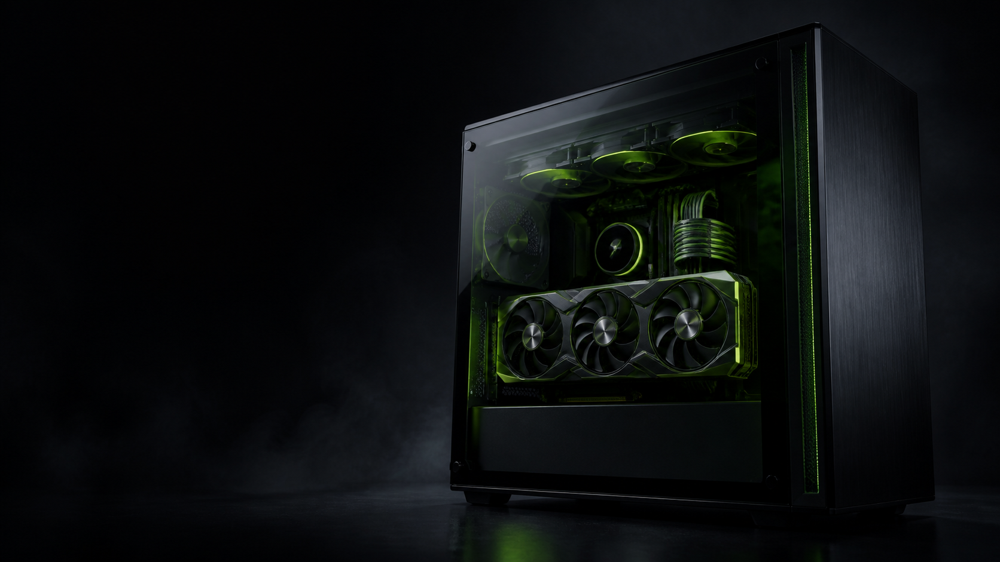

ANDIJON · PERFORMANCE, REFINED
Quvvat,
aniqlik bilan.
Kompyuter ehtiyot qismlari, o‘yin noutbuklari va zamonaviy texnologiyalar — murosasiz natija uchun.

ASSEMBLY
SYSTEM
Biz shunday texnikani tanlaymizki, u tezroq ishlaydi, yaxshiroq ko‘rinadi va uzoq xizmat qiladi.
01 / 05QUADRO MI STANDARD
Har bir detal
muhim.
Quadro Mi Computers — Andijondagi kompyuter texnikasi uchun ishonchli manzil. Biz faqat mahsulot sotmaymiz: o‘yin, ish, dizayn yoki ofis uchun to‘g‘ri konfiguratsiyani siz bilan birga tanlaymiz.
KATALOG
Keyingi tizimingizni
tanlang.
CUSTOM BUILD
QMC / ASSEMBLY 01O‘zingizning
ideal PC’ingiz.
Budjet, o‘yinlar va ish jarayoningizga qarab GPU, CPU, sovutish, xotira va korpusni tanlab beramiz. Har bir sistema muvozanatli, toza yig‘ilgan va ishlashga tayyor bo‘ladi.
Yig‘ish uchun murojaat ↗QUADRO MI · OUR SPACE
Bizning
do‘kon.
Texnika, komponentlar va aksessuarlar — barchasi bir joyda.


QUADRO MI CARE
Texnika — bu
faqat boshlanishи.
Mos komponentlarni tanlash, orzudagi kompyuterni yig‘ish va xariddan keyingi sozlashda siz bilan birgamiz.
Maslahat olish ↗MANZIL VA ALOQA